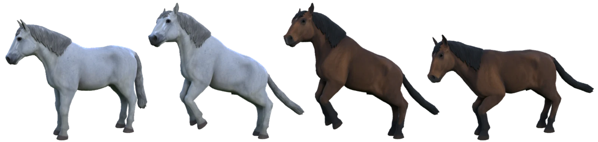

Ben Kaye*, 1,
Tomas Jakab*, 1,
Shangzhe Wu2,
Christian Rupprecht1,
Andrea Vedaldi1
1University of Oxford,
2Stanford University
(* equal contribution)
In CVPR 2025
Conference highlight
We introduce Dual Point Maps (DualPM), which reduce key tasks in the analysis of deformable objects to mapping an image of an object to its Dual Point Maps—a pair of point maps defined in camera space and canonical space. DualPMs are easy to predict with a neural network, enabling effective 3D object reconstruction and facilitating geometric tasks such as 3D keypoint detection, 3D viewpoint estimation, fitting a 3D skeleton, and performing animation and motion transfer.
We carefuly design the network architecture with the emphasis on generalization. Each part of the model focuses on solving an easier sub-task.
Our method first predicts a canonical point map from strong image features by translating the feature image to an image of canonical points. Conditioned on these, it then predicts a posed point map images.
The canonical and posed point map images, referred to as layered point maps, can be then translated into point maps using the predicted opacities for each pixel
The resulting canonical and posed point maps are in correspondence, with the pose represented by the flow between them, which can subsequently be used for various downstream tasks.
Our method is highly data-efficient as it is trained using synthetic data generated from only a single 3D model of a horse. Despite this, it generalizes remarkably well to real-world images and also to unseen classes of quadruped animals.
DualPM reconstructs a wide range of shapes within the object category, capturing fine details such as ears and legs, despite not being trained on any real images. For visualization, we color each point with its coordinate in the canonical space.
DualPM allows us to fit a 3D articulated skeleton to the predictions and animate the models with motion retargeting.
DualPM generalizes to unseen quadrupeds.
@Article{kaye2024dualpm,
title={{DualPM}: Dual {Posed-Canonical} Point Maps for {3D} Shape and Pose Reconstruction},
author={Kaye, Ben and Jakab, Tomas and Wu, Shangzhe and Rupprecht, Christian and Vedaldi, Andrea},
journal={arXiv preprint arXiv:2412.04464},
year={2024},
}